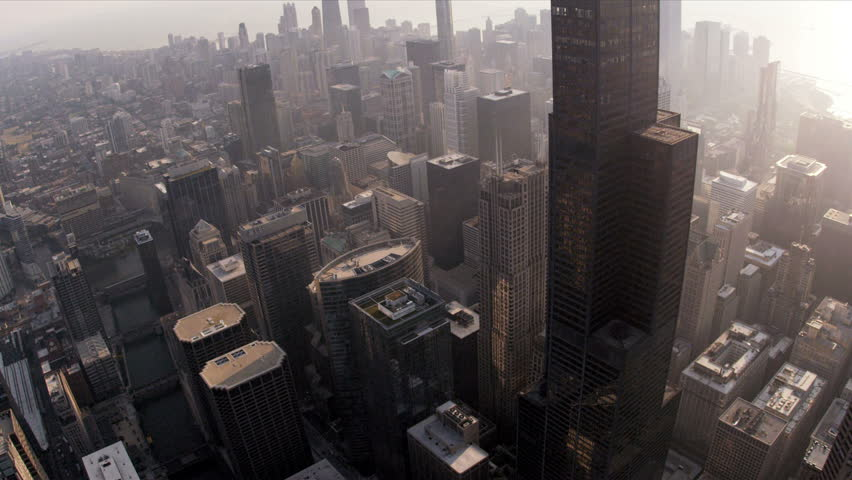

and find that you see nothing. There's no knowing where this door could lead but you must move forward as you can no longer see the other doors. You walk through and find yourself in an office building. Turning around, you see that the door has disappeared. In fact, there are no doors on the wall of the room. There's only the window overlooking the city and the strangely empty streets below it.

Turning away from the window, there's a desk. Among the standard office supplies, there's a note upon it that had not been there when you first had entered. Next to the note is a small vial. You approach the desk and read what follows, almost hearing a voice reading along with you:
You, my friend have two choices. But first, I'd like to thank you for choosing my door. It's not often I find people here. You are the first in many years and I do miss the company. You may find me given the right choice but the choose wrong and it will result in your unfortunate, untimely demise. That said, next to this note you'll find a vial and inside the top drawer of this desk you'll find a hammer. I feel it's obvious what must be done with the vial. The hammer, though, you'll have to use to smash through a window. So you can either down the vial or take the long way down. There's only one way out.
You take a step back and reread the note. You pick up the hammer and try to break through the wall but find it's made of some thick metal, too strong for you escape. Realizing the only other way out is to starve yourself, you pick up the vial and walk to the window. What will it be?
or
and everything is silent. No birds. No bugs. No skittering creatures. Not even a breeze. You look back to where you came from and find both of the other doors have disappeared. Your choice gone, you try to look for a way to open the door. There's no knob, no hinges, and no handle so you place your hands on the door and push.
The door opens with relative ease and you see before you a dark cavern leading further down into the mountainside. There's no light, but there's nowhere else to go. Reluctantly, you shuffle slowly down the corridor. After you get about 50 feet in the door closes behind you. There's not much point in turning back so you continue on, blind and afraid. No sooner do you take another step then the ground gives way beneath you. You scramble for purchase before you drop too far but you were not fast enough.
The fall continues for a moment but you quickly find yourself sliding down a smooth but steep tunnel. A few seconds later the tunnel turns and you see a light coming towards you. You reach the end of the tunnel, tumbling out onto the ground. You find yourself in a small room with two paths in front of you. Turning around, you see that the tunnel has closed itself off. So you have to keep moving forward, but which way?
or
you spy a small door almost unnoticeable in its framework. Hanging from the knob of the door is a key with a note attached that says, "Don't let go." You put the key into the lock and open the door, taking the key with you after you enter. You find yourself in a hedge maze. You look behind you and suddenly the almost unnoticeable door has become just another part of the wall. No way back, you guess.
You move through the hedge maze for what seems like hours, hitting dead ends, realizing you've doubled back multiple times, and feeling like you've hit your wit's end. As night falls, you finally reach the end of the maze. You're about ready to lay down and take a break when you hear a loud, deep, rumbling growl come from somewhere in the cave. Your rough day isn't quite over.
You run forward and see that you've come upon a castle. Coming upon its entrance, you find two plain doors. One has a key looped around its knob with a note that says, "You can let go." The other seems to match the key you had before. It seems you'll have to make a decision quickly to use one of the keys and enter the castle, the growl in the maze sounding only a short distance off. You get the feeling it's safe to assume that once you've stepped through a door that there's no going back. The question is which key is the right one?
or
and for a moment, nothing happens. Then all at once your stomach starts violently turning over, your head throbs worse than you have ever felt before, and your body grows weak. You start worrying that you have made the wrong choice. A voice rings deep in your mind, beyond the throbbing.
"Oh, I'm sorry. You chose the vial. I even gave you a hint. There was only one way out of the room. I suppose you just didn't get that. You've got another two minutes here. The poison in the vial acts quickly. See you in the next life."
You look around the room for the hammer, collapsing to the ground, expelling blood and whatever the remained in your stomach. You mentally say your last goodbyes to your family and friends and wait for the end. Then you realize you don't know how you got here. When did you end up in front of those doors? Why is the room collapsing around itself? Then your remember.
You wake up in a hospital bed. There was a crash. You're home with family. It was all just a bad dream.
and as soon as you do so the vial disappears from your hand as if it had never been there. Carefully, you break away the rest of the glass in the window's frame You creep toward the ledge hesitantly. It is a long way down but there is little choice left for you now. You take a couple steps back and take a deep breath. It is now or never.
Before you can think about it you run forward and meet open air. You descend quickly, clothes flapping around your limbs. The ground rises to you quickly and you have one last thought of regret as you and it meet. You shut your eyes and prepare for the crunch of bone. The thunk and crack of skull on pavement. One last moment of pain beyond your imagination.
There's no smack of bone on concrete. You open your eyes and sitting in front of you in a black is a person with the spitting image of the face you see every day in the mirror. You suppose this is what an out of body experience must be like but who are you to know. The other-you stands and walks to greet you, their steps making no sound. The silence in the room is deafening. They motion to hug you, a somber look in their eyes. You cannot feel them but logic tells you that you should be able to. There is just something not quite right. Then the other-you speaks and your memory suddenly flows back. The accident. How did you end up here? Where is here? Who is this? And many more questions. But the only thing that matters is what the other-you says.
"I'm sorry. But there's no way out from here. Welcome to your new home. We're going to get to know each other well. But for now I think you could use some time alone"
The other-you disappears and you are left in the small white room by yourself. Then you begin to hear the echoes of voices of friends and family waiting and hoping you will wake up someday. But you cannot respond. You took the step off the ledge. You made your choice.
and the tunnel goes on for hours. You tried turning back but after you turned the corner and the light faded you found that there was now a wall blocking the path from where you came. You think about going to sleep but you resist the urge, worried for what might be in this long dark. Time seems to disappear and you start to worry that there might be no way out.
Has it been minutes? Hours? A day? You're not sure. How did you get here? Even that answer eludes you. You press on, taking this seemingly endless passage to whatever end awaits you, if there even is an end. An undetermined amount of time passes and when you are finally at your wit's end you take one more turn to see what seems to be a light at the end of the tunnel. Heedless of what could be ahead, you move faster and faster trying to regain some sense as to where you are.
You are hungry and exhausted and all that matters is escaping this hellishly long passage. You just want something tangible aside from the mossy cavern walls and empty dirt floor of the tunnel. You're so excited to be free and then you come upon your triumphant exit.
Your victory suddenly feels so hollow when you realize you have come upon a familiar room with 3 strange doors. You collapse to the ground, stomach an empty pit and mind drifting towards unconsciousness when you discover you'll just have to try again.
and the entrance suddenly closes itself off. The passage in front of you lights itself up, wall sconces suddenly aflame. At the end of the relatively short passage is a door. You approach it and find it unlocked. Unsure of what lies ahead you slowly open the door, preparing yourself for whatever awaits you.
You see that you're suddenly at home in your bedroom. It is just as you left it. The only thing out of place is the note in the middle of your bed. You pick it up to read and find it says:
Greeting goes here, I'm happy to see you chose the easy way out. Enjoy the rest of your life.
The memory of your choices disappear as does the note and you go back to your life as per usual. Though you have an itching thought that something strange just happened.
and you walk in and hear the most wonderful thing you've heard all day. Singing. It went a little like this:
And so you realized you were in the Goblin King's castle. Here you live the rest of your days, happy and comfortable with David Bowie and his goblin kingdom.
slamming the door shut behind you. You are in a small cramped room with no exit. You feel like you made the wrong choice. And as if it were reading your mind, a minotaur opens the door. You thought that the myths could never be true. But here it stands. You should not have let go of the first key. You take one last breath as the minotaur takes his toll from his trespasser. Your life ends here.